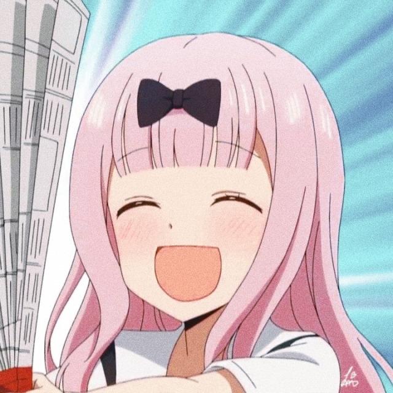

Home
Explore
Notifications
Messages
Bookmarks
Lists
Profile
More
Tweet
Hinata Shouyou
@Chibi-chan
Home
Deku
@One4AllDeku • 14m
I love All Might! Number One Hero!! PLUS ULTRA! I love All Might! Number One Hero!! PLUS ULTRA! I love All Might! Number One Hero!! PLUS ULTRA!
Vice-President
@MoonPrincess
The first ones to reach the truth of the universe will be Mathematicians who keep on thinking. Likewise, the first ones to reach true love will be those who keep on thinking
Bunny Girl
@Official_Mai
Upcoming TV Series!
Queen of Eldia
@LittleQueen
Sasageyo! Sasageyo! Shinzou wo sasageyo! Subete no gisei wa ima, kono toki no tame ni Sasageyo! Sasageyo! Shinzou wo sasageyo! Susumu beki mirai wo Sono te de kirihirake! Sasageyo! Sasageyo! Sasageyo! Sasageyo! Sasageyo! Sasageyo! Sasageyo! Sasageyo!
OwO
@Defying_Uravity
I said it would be easier to team up with friends, but now that I think about it, I might've been trying to rely on you again. That's why when Iida said he was challenging you, I grew a little ashamed of myself... Everyone is giving all they can, which only makes it fair for me to do the same... So, we will meet in the finals!
Trends for you
Trending in the Philippines
NAIA
10.1K Tweets
kpop • Trending
#HowYouLikeThat
1.1M Tweets
Trending in the Philippines
#FreePride20
11.1K Tweets
Trending in the Philippines
#JUNKTERRORBILLNOW
12.1K Tweets
Trending in the Philippines
#FreeMassTestingNow
200K Tweets
Show more
Who to Follow
Mr.Normal
@TsukishimaKei
Follow

Fujiwara-san
@LoveDetectiveChika
Follow
Onii-chan
@TheDemonSlayer
Follow
Show more